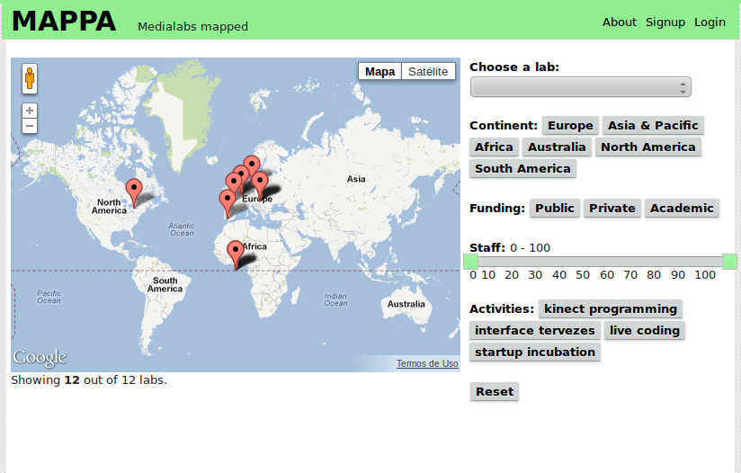

Attila Nemes criou o Mappa [5], um sistema de cartografia de labs pelo mundo. A intenção é "compartilhar conhecimento, auxiliar colaborações e apoiar uma rede de alcance mundial".

Felipe Fonseca compartilhou o projeto via RedeLabs. O post original pode ser visto aqui [6].